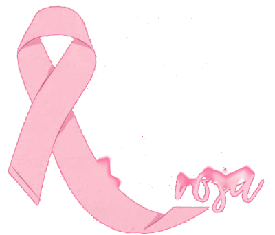
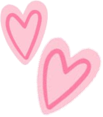
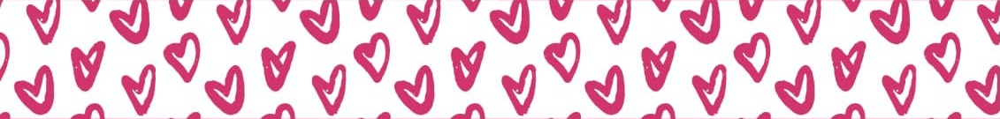

1Informação
O câncer de mama é o tipo predominante entre as mulheres. Embora seja mais comum com o avanço da idade, também pode ocorrer em mulheres mais jovens.

O câncer de mama é o tipo predominante entre as mulheres. Embora seja mais comum com o avanço da idade, também pode ocorrer em mulheres mais jovens.
Observe e perceba mudanças no seu corpo. A mamografia é o principal exame de rastreamento (dos 50 aos 74 anos deve ser feita a cada 2 anos e dos 40 aos 49 anos sob demanda médica).
Cuidar de si é
um ato de
amor!

Com o tratamento correto e nos primeiros estágios, as chances de cura podem chegar a 95%.
